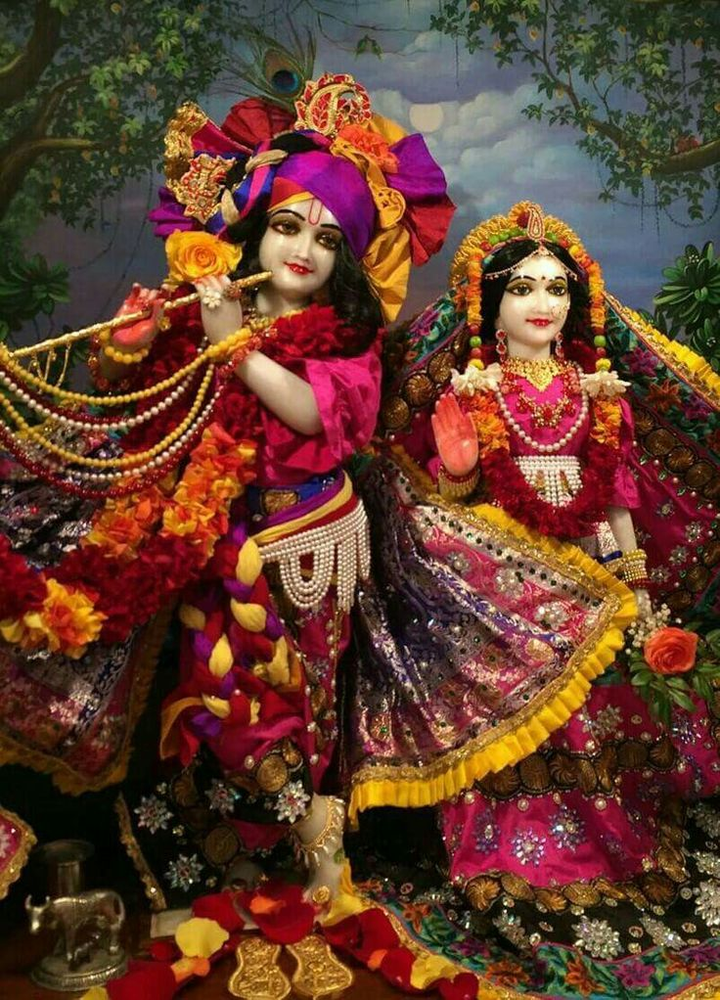
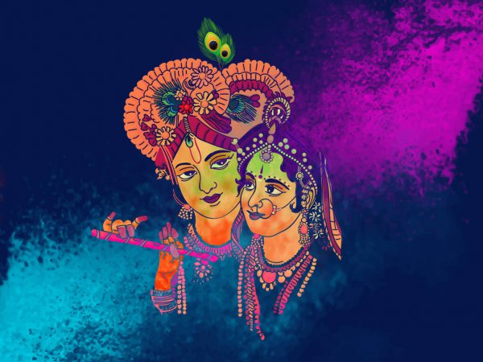
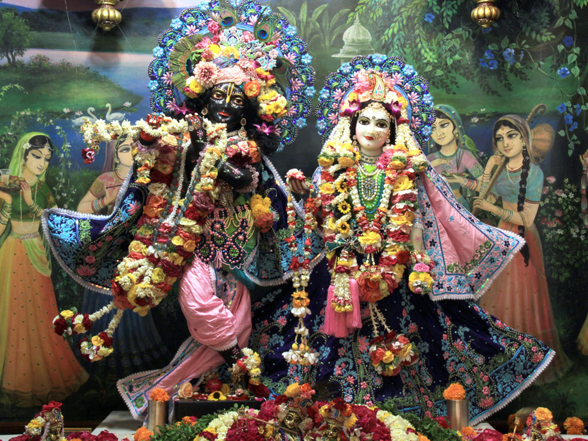
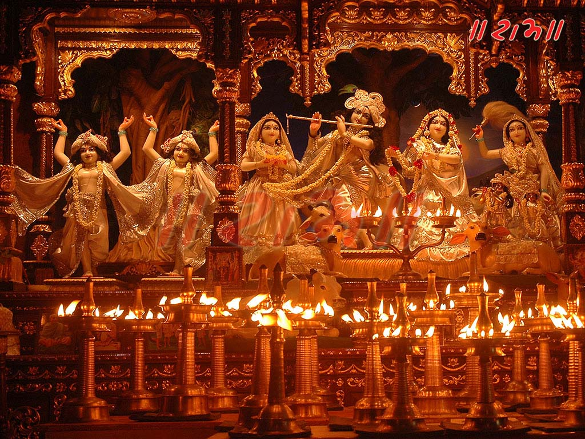

ISKCON
KRISHNA CONSCIOUSNESS
WELCOME TO KRISHNA CONSCIOUNESS WEBSITEYou have a right over your prescribed duties, but you are not entitled to the fruits of your actions. Never consider yourself to be the cause of the results of your activities, nor be attached to inaction. |
 |
|  | ||
|  |  |
Quick link |